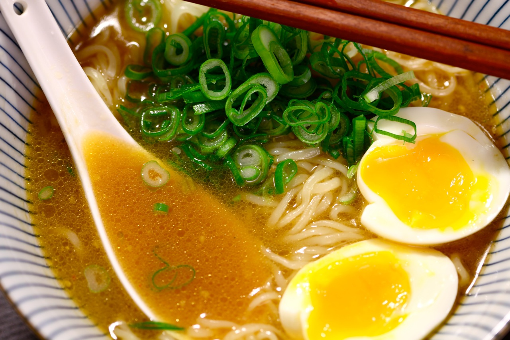

Miso Ramen

Miso soup is a traditional Japanese soup
Miso ramen soup is a popular Japanese dish that combines the flavors of miso paste with savory broth and noodles. The soup typically features a hearty broth made from pork bones, chicken, or vegetables, along with a mix of miso paste and soy sauce. The noodles used in miso ramen are typically curly and slightly thicker than other types of ramen noodles, which helps them absorb the rich, savory broth. Common toppings for miso ramen include sliced pork, green onions, bean sprouts, and boiled eggs, though there are many variations that incorporate different meats, vegetables, and seasonings.
Many people enjoy miso ramen soup for its complex flavor profile and satisfying texture. The combination of umami-rich miso paste, savory broth, and chewy noodles creates a satisfying, comforting dish that is perfect for cold days or when you're feeling under the weather. Whether enjoyed at a restaurant or homemade, miso ramen soup is a delicious and popular way to experience the flavors of Japanese cuisine.
Ingredients
- 2 Bok choy
- 2 Green onions
- Ginger
- 4 Cups of water
- 1 Cup of chicken bones
- Oil
- Chicken thigh with skin
- Ginger
- Eggs
- Ramen noodles
- 1/3 Cup of miso paste
- Green scallions
Directions
Step 1: Broth
- Cut the vegetables
- Cut the ginger in medium pieces
- Add the cups of water to a pot
- Add the vegetables, the ginger and the chicken bones to the water
- Let it simmer on medium-low for 30 minutes
Step 2: Aromatic oil
- Brown the chicken thighs with a bit of oil and reserve the chicken
- Add the minced ginger and brown it lightly in the oil and reserve
- Add the miso paste to the oil and brown it
Step 3: Miso soup
- Strain the broth and keep the broth
- Add slowly part by part the broth water to the browned paste and stir to emulsify gently
Step 4: Half-boiled egg
- Bring water to a boil in a pot
- Dip the eggs a few times to acclimate them
- Add the eggs to the boiling water and let them boil for 6 minutes
Step 5: Garniture
- Thinly slice the green scallions
- Blanch for 1 minute some bok choy in boiling water
- Cut the chicken thighs in long slices
- Boil ramen noodles
Step 6: Assembling the soup
- Add the noodles to a bowl
- Then cover with the miso broth
- Add the chicken slices, the egg, the bok choy and the scallions
- Finish by sprinkling with the fried ginger and enjoy !